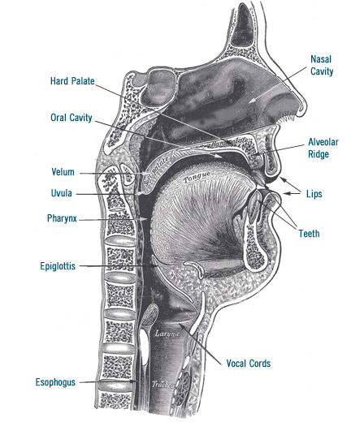
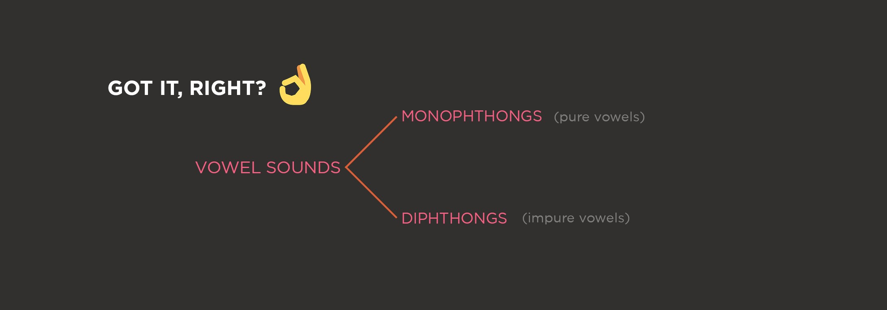

THE SOUND SYSTEM
The sound system comprises the speech sounds which are arranged in sequence to give syllables when speaking.
Speech organs or articulators produce the sounds of language. Organs of speech include the lips, teeth, alveolar ridge, hard palate, velum (soft palate), uvula, glottis and various parts of the tongue.
The articulators can be divided into two types: Active articulators and Passive articulators.
Active articulators move relatively to passive articulators which remain still to produce various speech sounds in particular manners of articulation. The upper lip, teeth, alveolar ridge, hard palate, soft palate, uvula, and pharynx wall are passive articulators.
The most important active articulator is the tongue—as it is involved in the production of the majority of sounds. The lower lip is another active articulator. But glottis is not an active articulator because it is only a space between vocal folds.
During production of any sound, the organs of speech are involved. Knowing the right organ to use during production of any speech sound will help you pronounce the sounds correctly.
Diagram of the organs of speech
INTRODUCTION TO PHONETICS /fə’netɪks/
Phonetics is the branch of linguistics that deals with the sounds of speech, their production, combination, description, and representation with written symbols.
It can also be defined as the study of the sounds of human speech using the throat, mouth, lungs, nasal and sinus cavities. It is the study and classification of speech sounds.
The three main branches of phonetics are:
ARTICULATORY PHONETICS
This is concerned with the articulation of speech. The position, shape and movement of speech organs such as lips, tongue and throat (vocal cords).
ACOUSTIC PHONETICS
This is the study of the physical transmission of speech sounds from the speaker to the listener.
AUDITORY PHONETICS
It is concerned with speech perception and the recognition of speech sounds.
PHONETIC TRANSCRIPTION
This is a system for transcribing sounds that occur in a language, precisely, oral or sign. The widest note of phonetic symbol is the International Phonetic Alphabet (IPA).
To know the correct pronunciation of a word, you need to check the transcription of the word. When using your dictionary, you get to see that after the word, you get the transcription. For example, look up the word “October” in the dictionary. You will notice that after the word, the transcription follows /ɒk’təʊbə/ (British) while /ɒk’toʊbər/ is America.
In Oxford dictionary, the British transcription is usually the first, while in the America pronunciation, you will see the name before the transcription.
In other dictionaries, the British pronunciation is written as “UK” while America is written as “US” before the transcription of the word.
The phonetic alphabet consists of forty-four (44) sounds. The 44 sounds are divided into two groups:
- Consonant sounds
- Vowel sounds
THE CONSONANT SOUNDS
Consonant sounds are produced with partial or full obstruction of air from the vocal cord.
There are twenty-four (24) consonant sounds in English language and these are grouped or classified according to the following:
- Place of Articulation (POA): is the part of the mouth where air is stopped partially or fully when producing consonant sounds. It can also be said to be where the consonant is produced.
- Manner of Articulation (MOA): is how the consonant is produced. It helps to know what happens when the organs of speech are released.
/m/
The consonant /m/ is a voiced consonant. That is to say, you feel vibration in your vocal cord or throat during the production of the /m/ sound. The production of the consonant involves the lips. Therefore, it is a bilabial consonant.
The main spelling symbol for the /m/ sound is letter “m” which can appear at the initial, medial and final position in a word.
Note: When letter “m” is followed by b at the end of words, the b is silent. In the word bomb, climb, dumb, the b is silent. Therefore, the last sound is /m/ not /b/.
In the word “Blame”, the last sound is /m/ not /e/ because the “e” is silent (Read about silent letter in chapter six of this book).
/p/
This consonant is a voiceless consonant. For the articulation of /p/, the upper and lower lips are brought together to obstruct the flow of airstream from the lungs. It is a bilabial plosive.
The spelling symbol for consonant /p/ is mainly letter “p”. It can be found at the beginning, medial and end of words.
Some words with consonant /p/ are pop, plan, please, puppy.
Note: Letter p is silent in some words like empty, psalm, psychology.
/b/
The consonant /b/ is similar to the consonant /p/ during articulation. The difference between /p/ and /b/ is the vibration. The vocal cords vibrate (Voiced) during the production of the /b/ sound but does not vibrate for /p/.
Therefore, the /b/ sound is a voiced bilabial plosive. The only spelling symbol for the sound /b/ is letter “b”. Few words with /b/ baby, bubble, bat, crab, December.
Note: The b is silent in the following words. Debt, doubt, plumb, tomb.
/n/
In the production of the consonant /n/, the soft palate is lowered to allow the airstream pass through the nasal cavity (nose) then, the tips of the tongue form a closure with the alveolar ridge. The vocal cords vibrate especially during the production of the /n/ sound. Therefore, /n/ is an alveolar nasal.
The spelling symbol for consonant /n/ is letter n as in nose, nine, knit, train, line, nanny.
Note: Letter n is silent after letter “m” in words. We have silent n words like solemn, hymn, and column.
/θ/
The consonant /θ/ is produced with the tip of the tongue in a light contact with the incisors while the airstream passes through the mouth. During the production of the consonant /θ/, the vocal cord does not vibrate. Therefore, it is a voiceless dental fricative. The major spelling symbol of the /θ/ sound is “th”. Practice sticking out the tip of your tongue a little when pronouncing words with “th” and be conscious of your pronunciation.
Words with the voiceless “th” are thank /θæŋk/, thing /θɪŋ/, bath /bæθ/, and tooth /tu:θ/.
/ð/
The consonant /ð/ is produced with the tip of the tongue making a light contact with the incisors while the airstream passes through the narrowing between the tongue and the incisors with some frictional noise. During the production of the /ð/ sound, the vocal cord vibrates unlike the /θ/ sound. Therefore, it is a voiced dental fricative.
Let’s take a look at some voiced or hard ‘th’ words. We have they /ðeɪ/, father /fa:ðə/, that /ðæt/, other /’ʌðə/.
/f/
The production of the /f/ sound involves the front upper teeth and the lower lip. There is no vibration in the vocal cord during the production of this sound. Therefore, the consonant /f/ is a voiceless labiodental fricative.
The spelling symbols for consonant /f/ are:
‘F’ as in first, fish, puff, food.
‘Gh’ as in laugh, tough, cough, enough.
‘Ph’ as in telephone, photograph, elephant, pharmacy.
/d/
The production of consonant /d/ involves the tip of the tongue in contact with the alveolar ridge. The contact results in a total obstruction of airstream which is released immediately with an explosive sound. During the production of the sound, the vocal cords vibrate unlike the /t/ sound. Therefore, consonant /d/ is a voiced alveolar plosive.
The only spelling symbol for consonant /d/ is letter ‘d’. We can have words with the /d/ sound at the beginning, middle and end of words Day, daddy, dam, load, lead, dog, dance, tend.
/v/
The consonant /v/ is similar to the consonant /f/ during the production. The difference between /f/ and /v/ is the vibration during the production of consonant /v/. Consonant /v/ is a voiced labiodental fricative.
The major spelling symbol for the consonant /v/ is letter ‘V’. Van, weave, vase, leave, violin dove.
/t/
To produce the consonant /t/, the tip of the tongue is in contact with the alveolar ridge and the contact obstruct the flow of air. There is no vibration of the vocal cord when producing the /t/ sound. The /t/ sound is therefore, a voiceless alveolar plosive.
There are many spelling symbols for the consonant /t/ and they are:
‘T’ as in tin, tight, it, feet.
‘Th’ as in Thames.
‘Ed’ as in missed, worked, washed, and looked.
In the word Christmas, listen, apostle, castle, the sound of letter t is silent.
Note: The Ed sounding /t/ in words are called past tense markers. You will get more explanations as you proceed with the book.
/s/
The consonant /s/ is articulated with the tip and blade of the tongue making a light contact with the alveolar ridge while the airstream passes through the groove created by the partial obstruction. Therefore, there is no vibration in the vocal cord as the sound is produced. It is therefore, a voiceless alveolar plosive.
For the sound /s/ we have different spelling symbols which are:
‘S’ as in sun, hiss, sing, sound, best
‘Sc’ as in science, scent, scissors, scepter
‘Ci’ as in city, circle, civil, cite
‘Ce’ as in rice, dice, central, Centre, recent
‘CY’ as in cylinder, cyber, cycle.
‘X’ as in axis, axe, Axel, axle.
/z/
Consonant /z/ has the same place of articulation with consonant /s/. The only difference between /z/ and /s/ is, the vocal cord vibrates during the production of the sound /z/ while it does not vibrate when producing the sound /s/. Consonant /z/ is a voiced alveolar plosive.
There are different symbols with consonant /z/ and they are:
‘Z’ as in zebra, zoo, zip, zone, zero
‘S’ as in does, has, was, nose, whose, ways, use, bees
‘X’ as in xylophone, example, examine, Xerox, xenophobia
Note: The sound of letter x changes to the sound of letter z when it is followed by a vowel or semi vowel (which is letter y) in words.
/l/
Consonant /l/ is produced with the tip of the tongue making a contact with the alveolar ridge. This contact causes a partial obstruction of the airstream which, however, passes along the sides of the tongue. The vocal cord vibrates during the production of the /l/ sound. Therefore, it is a voiced alveolar lateral.
The main spelling symbol for consonant /l/ is letter ‘L’. It can be found at the initial, medial and end of words
/r/
Consonant /r/ is articulated with the tip of the tongue coming near the alveolar ridge but the tip of the tongue won’t touch the ridge. The rim of the tongue touches the upper molars while airstream passes over the center of the tongue without friction. The vocal cords vibrate as the /r/ sound is produced. Therefore, the /r/ sound is a voiced frictionless liquid.
The main spelling symbol for consonant /r/ is letter r. We have words like rat, hurry, rope, hungry, drive, very, race.
Note: The sound of letter r is not heard at the end of words in British English except it is linked to another vowel. Details about linking ‘r’ is discussed in chapter six of this book.
/ʃ/ (sh)
The production of consonant /ʃ/ involves the tip, blade and sides of the tongue. There is no vibration in the vocal cord during the production of the sound. Therefore, the consonant /ʃ/ is a voiceless palato alveolar fricative.
The /ʃ/ sound has many spelling symbols. The spelling symbols are;
‘Sh’ as in sheep, fish, ship, dish, shoe
‘S’ as in sure, sugar, censure
‘Ci’ as in special, racial, official, beneficial, gracious
‘C’ as in ocean
‘Ch’ as in chef, machine, Chicago, champagne, moustache.
‘ti’ as in nation, station, correction, addition, patience.
‘Ss’ as in mission, passion, expression, oppression.
Make use of your dictionary to get more words and always be conscious of the pronunciation of any word.
/tʃ/ (ch)
In the production of consonant /tʃ/, the blade and rims of the tongue form a total obstruction to the airstream with the alveolar ridge while the front of the tongue is raised toward the hard palate. The air escapes as the obstruction is slowly released. During the articulation of consonant /tʃ/, the vocal cord does not vibrate. Therefore, the consonant is a voiceless palato alveolar affricate.
The spelling symbols for consonant /tʃ/ are:
‘Ch’ as in church, teach, preach, cheat, choice, chop.
‘Ture’ as in mature, future, nature, feature, structure.
‘Tual’ as in ritual, actual, factual, punctual.
‘Teous’ as in righteous.
/ʒ/
This consonant is a voiced palato alveolar fricative which has the same process as /ʃ/ except that, the vocal cord vibrates as it is produced. The /ʃ/ sound is a voiced counterpart of the voiceless /ʃ/. The /ʃ/ sound does not occur at the beginning of words except in few words of French origin.
The spelling symbols for /ʃ/ are as follows;
‘S’ as in leisure, usual, measure, casual, closure.
‘Z’ as in seizure.
‘si’ as in evasion, television, division, cohesion, decision.
‘Ge’ as in garage, genre, barrage, rouge.
Note: Words with ‘sion’ makes the sound /ʃ/ while words with ‘tion’ makes the sound /ʃ/.
/ŋ/
In the production of consonant /ŋ/, the airstream passes through the nasal cavity as a result of lowering the soft palate. When the soft palate is lowered, the back of the tongue forms a closure with the velum. The vocal cord vibrates during the production of the consonant sound. Therefore, the /ŋ/ sound is alveolar nasal. The /ŋ/ sound does not occur at the beginning words. It spelling symbols are;
‘Ng’ as in sing, bring, swing, king, wing, long, wrong, sing.
‘nk’ as in drink, bank, thank, sink.
‘nger’ as in finger, stronger, anger, hunger.
Other words with the /ŋ/’sound are banquet, triangle.
Note: During the production of /ŋ/ ‘ng’, the ‘g’ is not sounded out but the ‘n’ is elongated.
/j/ (y)
The consonant /j/ is produced with the front part of the tongue raised towards the hard palate to a position slightly higher than it takes for the production of /i: /. The lips are spread while the vocal cord vibrate so that /j/ is a voiced palatal consonant.
Consonant /j/ which is letter ‘y’ is a semi vowel sound. It acts as a consonant at the beginning of words but as a vowel at the middle and end of word.
Spelling symbols of words with the /j/ sound are;
‘Y’ as in you, yam, yet, yellow, yoyo
‘EW’ as in few, clew, blew, dew, new, ewe
‘Eau’ as in beauty, Europe
‘Ui’ as in suit, juice, fruit.
‘U’ as in cute, tune, queue, clue, argue.
Some words with consonant /j/ acting as a vowel are baby, carry, lazy, daddy, why, cry, by, fry.
Note: The symbol /j/ is for consonant ‘y’ not letter J, while the symbol /dʒ/ is for letter ‘J’.
/dʒ/ (J)
Consonant /dʒ/ is a voiced palato alveolar fricative which is articulated the same way as /dʒ/. The difference here is, the /dʒ/ sound is a voiced consonant while /dʒ/ is a voiceless consonant. The spelling symbols for consonant /dʒ/ are;
‘J’ as in jump, jeep, jet, jug, Jude, just.
‘G’ as in gin, gem, gesture, gentle, large, ginger.
‘Dg’ as in bridge, judge, edge, fridge, knowledge, pledge.
‘D’ as in soldier.
/k/
Consonant /k/ is produced when the back of the tongue makes contact with the velum. The contact results in a total obstruction of the flow of air. The air pressure which build up is suddenly released as an explosive sound. The glottis is open so that the vocal cords do not vibrate as /k/ is produced. Consonant /k/ therefore, is s voiceless velar plosive. Consonant /k/ has many spelling symbols and they are;
‘K’ as in kite, cook, king, kettle
‘C’ as in cook, cake, cut, cat.
‘cc’ as in account, accompany, accused, accommodate.
‘Ck’ as in clock, duck, flock, lock, pack, black.
‘Q’ as in liquid, quantity, quarrel, banquet, question.
‘Ch’ as in choir, chorus, scheme, stomach, architect, chaos, school, echo
‘Ex’ /ɪks/ as in except, exception, exceed, exchange.
‘ex’ /eks/ as in excellent, exercise, exclamation.
Note: ‘Ex’ makes three sounds in words. Ex is sounding /k/ in the words above because of the ‘x’. But in words like examine, exact. The ‘x’ is sounding /z/.
/g/
Consonant /g/ is a voiced counterpart of /k/. The process of production is similar to that of /k/ except that the vocal cord vibrates during production which makes it a voiced velar plosive. We have just two spelling symbols for consonant /g/.
‘G’ as in gate, gun, dog, God, log, good.
‘gh’ as in Ghana, ghost, ghee, ghetto.
Note: ‘Gh’ makes the ‘g’ sound only at the beginning of words. The letter g is silent when it is followed by n at the beginning or at the end of words such as gnash, gnat, gnaw, sign, and reign.
/w/
Consonant /w/ is articulated when the back of the tongue is raised towards the soft palate to a position slightly higher than it takes for the production of vowel /u:/.The lips are rounded just like the production of vowel /u:/ but the vocal cord vibrates during the production of /u:/. Consonant /w/ is also called a semi vowel consonant.
Spelling symbols with consonant /w/ are;
‘W’ as in water, well, wall, wow, wire.
‘wh’ as in what, white, why, which, when.
‘Qu’ as in queen, quack, quake, square.
Note: When you are conscious of the pronunciation of words with ‘qu’, you will hear the sound of letter ‘w’ therefore, the transcription words with ‘qu’ is usually written as /kw/ in your dictionary. Letter ‘w’ acts as a vowel in words when it is followed by a (as in paw, claw), e (as in clew, dew), o (as in grow, sow).
/h/
Consonant /h/ is a voiceless glottal fricative which is produced as the airstream passes through an open glottis in the mouth. To produce this consonant, you just need to breathe in and breathe out. The spelling symbol for consonant /h/ is letter ‘h’ and ‘wh’. The sound of letter h does not occur at the end of words, it is only sounded at the beginning of words.
Words with consonant /h/ are:
‘H’ as in hat, house, hospital, how, hello.
‘Wh’ as in who, whom, whose.
Note: The sound of letter h is silent in some words like hour, honour, vehicle, exhaust.
The consonant sounds are paired into voiced and voiceless sounds.
Voiced sounds: There is vibration of the vocal cords during the articulation of the voiced sounds
Voiceless sounds: These sounds are produced with little or no vibration of the vocal cord during articulation.
Classification of Sounds and Points of Articulation
| Sounds | Classification | Organs of articulation |
|---|---|---|
| /m, p, b/ | Bilabial | Lower and upper lips |
| /f, v/ | Labiodental | Lower lip and upper teeth |
| /θ, ð/ | Dental | Tip of the tongue and upper teeth (incisors) |
| /ʃ, ʒˏ tʃˏ dʒ/ | Palato alveolar part | Tip of the tongue, alveolar ridge, the central of the tongue and hard palate |
| /j/ | Palatal, Palate | Central part of the tongue and hard |
| /kˏ gˏ ŋ/ | Velar | Back of the tongue and hard palate |
| /h/ | Glottal | Glottal |
| /t, d, s, z, n, r, l/ | Alveolar | The tip of the tongue and alveolar ridge |
| /j/, /w/ | Approximant | The tongue and the roof of the mouth |
THE VOWEL SOUNDS
The vowel sounds are produced without obstruction of air and as a result, there is no friction or contact between the organs of speech (tongue, teeth, lips etc.)
In English, there are twenty major vowel sounds and these are classified into;
- Monophthongs (pure vowels)
- Diphthongs (impure vowels)

We are delving into the vowels, but you need to know that for each sound, there are different spelling variants where the letter or the combination of two letters come together to give us a particular sound. It should be noted that a letter does not dictate the sound it should have, rather, the sound tells us how the letter should be pronounced because letter is to writing while sound is to speech.
The Monophthongs (pure vowels)
Monophthongs (pure vowels): They are single vowels and twelve in number. The pure vowels are divided into two parts, the long vowels and the short sounds. The long vowel can be identified with a (:) which is called the length mark.
Whenever you see a sound with the Length mark (:), note that the duration of time needed for the pronunciation of the sound is longer than that of a word without the length mark (:). Therefore, a word with the length mark is stressed.
long /i:/ (sound guide: The name of letter ‘E’)
This is monophthong number one and it is a long vowel. It is produced with the front part of the tongue raised to a height just below the closed position while the lips are spread.
The sound is pronounced as if you are saying the name of letter e.
Spelling variants for the sound /i: / are as follows:
‘e’ as in we, she, Venus, vehicle, behind, me
‘ee’ as in see, greet, meet, deed, need, heed, heel, sweet
‘ea’ as in sea, meat, neat, beat, lead, seat, leap
‘ae’ as in Caesar, aesthetic
‘ei’ as in receive, receipt, deceive, deceit, conceive
‘ie’ as in chief, thief, brief, grief
‘uay’ as in quay
‘ey’ as in key, donkey
‘I’ as in machine, Vaseline, vaccine, police
‘eo’ as in people
‘oe’ as in foetus, amoeba, phoenix
‘ui’ as in suite
short /ɪ/ (sound guide. It is pronounced like ‘A’)
The /ɪ/ sound is a short sound. It is pronounced like the letter ‘a’. For the articulation of this vowel, the lips are spread.
Its spelling variants are as follows
‘i’ as in ink, it, sit, bit, kid, insect, igloo
‘e’ as in market, English, estate, bonnet, basket, pretty
‘u’ as in busy, minute, business
‘ui’ as in build, biscuit, guitar, guild
‘o’ as in women
‘a’ as in language, village, orange
‘y’ as in symbol.
The /e/ sound (sound guide ‘e’ as in egg)
This is a common sound we hear in the word ‘bread’ /bred/. It is a short front, vowel sound. The lips are spread during the production of the /e/ sound.
Its spelling symbols are:
‘E’ as in egg, net, pet, red, fed, help
‘Ea’ as in head, bread, dread, thread, dead, spread
‘ie’ as in friend
‘eo’ as in leopard, jeopardy, Geoffrey
‘a’ as in any, many
‘u’ as in bury
‘ai’ as in said
Short /æ/ (sound guide ‘a’ as in apple)
This is a short, vowel sound. For the articulation of this sound, the front part of the tongue is raised to a height slightly above the “open” position while the lips are spread.
The spelling symbol for this sound is letter a. Letter a makes the sound /æ/
‘a’ as in ant, bag, glad, calendar, magazine, mat, fact.
Long /a:/ (sound guide ‘ahh’)
This is a long vowel sound. The stress used in pronouncing words with this sound is longer than that with the /æ/ sound.
Its spelling symbols are:
‘Ar’ as in car, park, garden, star, March, farm
‘a’ as in class, mass, fast, glass, pass, clasp
‘al’ as in Palm, calm, balm, half, calf
‘ear’ as in heart, hearken
‘au’ as in laugh, aunt
Short /ɒ/ (sound Guide ‘o’ as in orange)
This is a short and round vowel. It is a round sound because the lips are rounded for pronunciation of the sound.
Its major spelling symbol is letter ‘o’. Another spelling symbol is letter ‘a’. Letter ‘a’ makes the sound /ɒ/ when it comes after letter ‘w’.
‘O’ as in orange, on, pot, song, cotton, stock.
‘a’ as in water, wash, watch, what, was.
‘ou’ as in cough
Long /ɔ:/ (sound guide ‘or’)
This is a long, round sound. The stress used in pronouncing this sound is longer than that of /ɒ/.
Spelling symbols for this sound are:
‘Or’ as in sport, horn, port, short fork, born, for.
‘Aw’ as in saw, jaw, dawn, hawk, lawn, pawpaw, claw, prawn.
‘al’ as in talk, bald, stalk, all, call, tall, ball, fall.
‘Oor’ as in door, floor, poor, moor.
‘Our’ as in course, court, pour.
‘Ar’ as in dwarf, war, swarm.
Short /ʊ/ (sound guide ‘o’)
This is a short sound. The lips are rounded while the jaw is in a close position during the production of this sound.
Its spelling symbols are:
‘oo’ as in book, good, look, foot, cook, wood
‘o’ as in woman
‘Ou’ as in could, should, would
‘U’ as in put, sugar, full, bush, push.
Long /u:/ (sound guide ‘woo’)
This is a long, round sound. The stress used during the pronunciation of the /u: / sound is longer than the /ʊ/ sound.
Its spelling symbols are:
‘O’ as in do
‘Oo’ as in food, boom, school, noon, pool, room
‘Ou’ as in group, youth, coup, soup, you
‘oe’ as in shoe
‘ue’ as in blue, glue, clue, queue
‘u’ cute, flute, mute, compute.
‘ew’ as in new, few, dew, flew, stew, ewe
‘ui’ as in fruit, suit, juice
‘eau’ as in beautiful
Note: In pronunciation of some of the words, e.g. new, stew, you etc. you will notice you can hear the /j/ sound before the /u: /. The /j/ is the sound of letter ‘y”. Therefore, ‘you’ is transcribed as /ju: /, stew /stju: /, new /nju: /.
/ʌ/ (Sound guide: ‘uh’ as in cup)
This is a short vowel sound. For the articulation of this sound, the centre of the tongue is raised, while the jaw is open. The lips are neutrally shaped Its spelling symbols are:
‘u’ as in up, cup, club, Sunday, husband, sun, uncle, dumb
‘o’ as in love, come, come, dove, some, honey, onion, son, oven
‘oe’ as in does
‘oo’ as in flood, blood
‘Ou’ as in country, young, tough, rough, enough.
It is important to note that the /ʌ/ sound is different from the /ɒ/ and /æ/ sound.
/ɜ:/ (sound guide: ‘urr’)
This is a long, vowel sound. To articulate this sound, the center of the tongue is raised to a height between “close” and “open” position and the lips are neutral in shape.
Many people do find it difficult to pronounce this sound correctly.
The spelling symbols for this sound are:
‘ir’ as in bird, girl, first, third, dirty, stir, flirt, skirt, shirt
‘er’ as in term, stern, kernel, herb, serve, verbal, her
‘or’ as in work, worship, worm, worst, worthy, world.
‘ur’ as in turn, burn, hurt, church, turkey
‘ear’ as in earn, learn, heard, pearl, earth
‘our’ as in journey, courtesy.
It is important to note that the word “or” only make the /ɜ:/ sound when it comes after letter “w”.
“Or” in other words like short, port, fork makes the /ɔ:/ sound.
The /ə/ (The schwa sound)
This is the only vowel with the name ‘schwa.’ It represents the weak (reduced) form of a vowel in an unaccented position. The vowel is seen in grammatical words like “an”, “can”, “but” etc. It is a short vowel which is produced with the lips in a neutral position. The /ə/ sound is found in unstressed syllables. The syllable taking the schwa /ə/ is not stressed.
The vowel /ə/ is not represented by specific spelling symbols. It can take the place of any vowel in words. It is the most common sound in English. For you to speak English correctly and sound like a Briton, you need to use the schwa /ə/ sound correctly in words.
Some words with the schwa /ə/ sound are;
aGAIN /ə’geɪn/
DOCtor /’ˈdɒktə’/
COlour /’kʌlə/
aROUND /ə’raʊnd/
obLIGE /ə’blaɪdʒ/
The Diphthongs (Impure Vowels)
Diphthongs (impure vowels): are made up of two vowels. A diphthong is a vowel which changes its quality in the process of its articulation. The production involves gliding from one vowel to another.
The diphthongs are eight in number.
/eɪ/
The diphthong /eɪ/ is the vowel sound we hear in “pray” which is pronounced as /preɪ/.
For the production of the diphthong /eɪ/, the tongue glides from the /e/ sound to the /ɪ/ sound, then you pronounce /eɪ/ as a single vowel. The lips are spread during the production of the /eɪ/ sound.
The spelling symbols for diphthong /eɪ/ are:
‘a’ as in face, paper, mate, fate, name, stadium
‘ai’ as in rain, pain, sail, tail, gain, lain
‘ay’ as in say, pay, day, pray, play, gay, hay
‘ei’ as in eight
‘e’ as in sachet, beret, etude
‘ey’ as in they
‘ea’ as in break, great.
/aɪ/
The /aɪ/ diphthong is the vowel sound we hear in the word “eye”. The articulation of the diphthong /aɪ/ starts with the /a/ sound, then, the tongue gradually glides to /ɪ/.
The spelling symbols for this sound are;
“i” as in I, ice, time, fine, pride, abide
“ie” as in lie, pie, tie, die
“uy” as in buy
“ye” as in dye, lye, bye
“igh” as in high, sight, bright, sight
“y” as in cry, my, shy, by, try
“ei” as in height, either, heist, neither.
/ɔɪ/
This is the sound you hear in the word “oil”. For the articulation of the /ɔɪ/ sound, the tongue glide begins from the back towards the front and the lips which are rounded, suddenly become spread as the tongue glide towards the /ɪ/.
There are only two spelling symbols for diphthong /ɔɪ/. The spelling symbols are:
“oi” as in oil, point, toilet, coil, join, toil, voice
“oy” as in joy, toy, boy, employ, annoy, coy
/əʊ/
In the production of the /əʊ/ sound, the tongue glides to the center of the tongue and moves to a position between the center and the back with a slight, closing movement of the lower jaw. When articulating this sound, the shape of the mouth is neutral at first but becomes rounded at the end of the production.
The spelling symbols for this diphthong are;
“o” as in old, go, no, so, stove, sold
“Ow” as in low, show, know, grow, sow
“Oe” as in toe
“oa” as in goat, soap, load, boat, coat, float
“ou” as in soul.
/aʊ/
For the articulation of the /ɑʊ/ sound, the tongue glides from the /a/ sound to the /ʊ/ sound. When producing the sound, the shape of the lips changes from neutral to a rounded position.
The spelling symbols for the /ɑʊ/ sound are;
“Ou” as in loud, shout, mount, count, bounce, house, sound
“Ow” as in cow, now, allow, how, down, drown, frown, gown
“ough” as in plough, bough
/ɪə/
To articulate this sound, the glide of the tongue begins from /ɪ/ to /ə/ and the lips remains neutral. The spelling symbols of /ɪə/ are;
“ere” as in here
“ear” as in ear, hear, dear, gear, fear, tear
“eer” as in beer, seer, peer, deer
“eir” as in weird
/eə/
To produce the /eə/ sound, the glide begins from the front of the tongue to the centre. The shape of the lips is neutral throughout the production of the sound. The spelling symbols of the /eə/ sound are;
“air” as in hair, air, chair, fair,
“are” as in share, dare, stare, declare, care
“eir” as in their, heir,
“ere” as in ere, there, where
“ear” as in wear, swear, bear, pear
/ʊə/
The production of the /ʊə/ sound involves a tongue glide from the position of the /ʊ/ to the /ə/ sound. During the articulation of the sound, the shape of the lips changes from rounded to neutral.
The spelling symbols for this sound are;
“oor” as in poor
“our” as in tour, gourd
“ure” as in pure, sure, endure, ensure
“u” as in fury, jury, purity, plural.
Now that you have been acquainted with the symbols of the vowel and consonant sounds, you can try transcribing words or looking up the pronunciation of any word by checking for its transcription in the dictionary.
If you can correctly pronounce the vowels (mostly, the wrongly pronounced vowels are /ʌ/, /ɪ/, /ɜ:/, /ʊ/ /əʊ/, /eɪ/), and apply the correct diction when speaking, you will surely sound better.